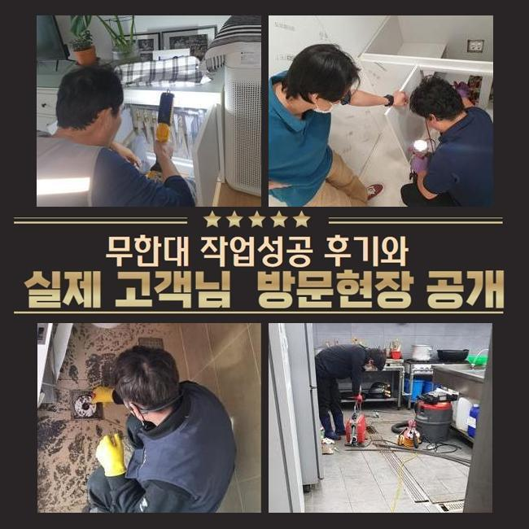
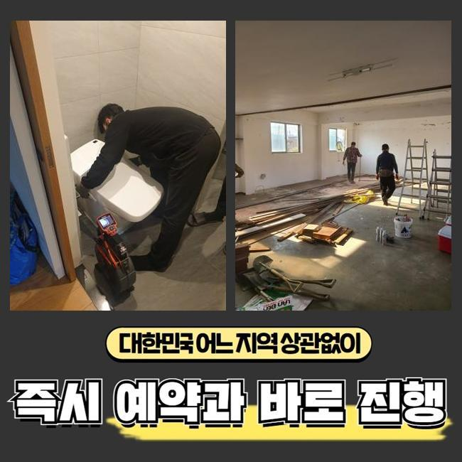
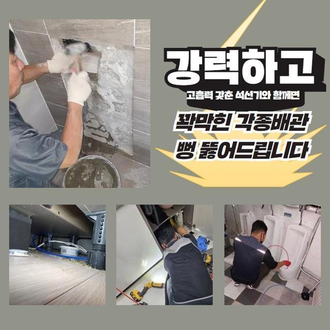
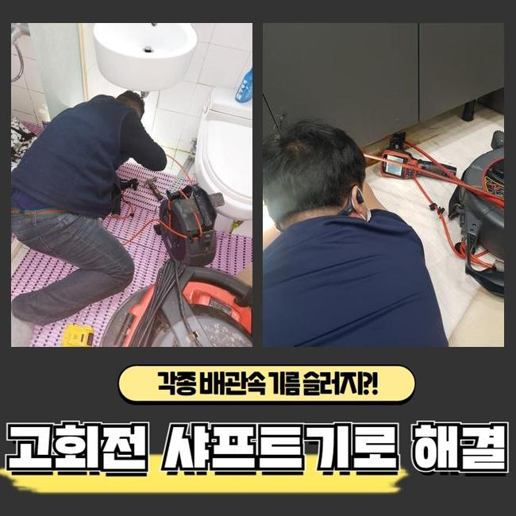
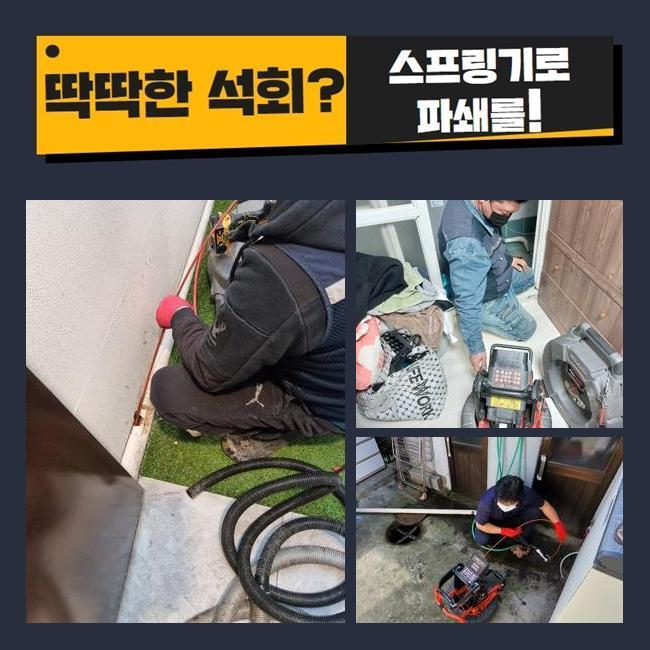
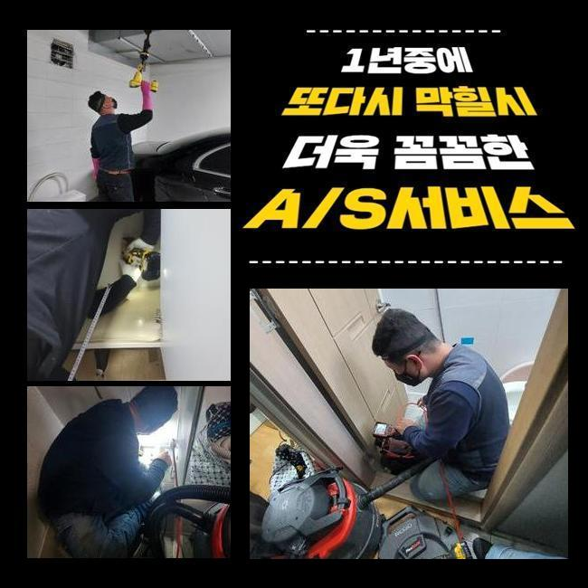

🏠 밀양시 베란다하수구막힘 경주시 하수구업체
용인 하수구막힘 전문 시공 후기

📋 작업 개요
- 위치: 용인
- 서비스 유형: 하수구막힘, 배관막힘, 누수수리, 배관청소
- 작업 일시: 2024. 12. 26. 22:48
- 업체명: 하수구수사대 (010-5615-2118)
🔍 문제 상황
밀양시 베란다하수구막힘 경주시 하수구업체
2주전에 물막힘이 생겨 스트레스를 받고 계셨던 고객분에게 문의가 들어왔는데요
의뢰인분은 관로와 관련한 전문지식까진 아니였지만 일정 수준의 지식내용은 답습한 상황이였죠
의뢰인의 경우 캡이나 여타 부품들을 청소하고 막힌 스팟을 찾아보고자 둘러보셨으나 어디쪽이 문제인건지 인지하지 못해 저희전문진에게 연락을 주셨던 상태였어요
현장에 도착하니 지속적인 시도로 고생하셨던 것이 눈에 띄었어요
고객분의 입장에선 확실한 근원들을 찾을 수 없는 현장들이 대다수입니다
도착 후 하수관을 점검하니 주의해야할 요소는 없는 상태였죠
의뢰인의 경우 바깥에 위치한 관로에서 원인들이 자리했을 확률이 있다고 판단했는데요
더군다나 식물과 나무가 자리한 상태라면 땅 밑으로 말리거나 잔재들이 흘러들어갈 가능성들이 존재합니다
이것으로 외측의 배수관이 문제를 보일 수 있어요

🔎 원인 분석
💡 전문가 진단: 정밀 진단 장비를 사용하여 슬러지의 고착 여부를 판명하고 타격/세척 작업을 실시했습니다.
고객께 현상황의 예견되는 까닭들을 안내하고 외측을 진단해봐야할 것을 안내했어요
의뢰인분도 설명드린 사항들을 듣고난 후 메인 하수 시스템 검사절차에 동의했습니다
수리를 시작하기에 앞서 기계검수도 진행시켰습니다
하수시스템 정체의 이유는 한두가지가 아닌데요
배수설비가 드러나있으면 담배꽁초와 같은 근처로부터 유입된 이물이 관로로 쌓여버려요
외측에 비가 내릴때 바깥쪽 하수시스템들의 실태를 등한시한다면 문제들은 갑자기 생길거에요
또한, 나무의 땅 밑으로 들어가버리는 사례들도 자주 일어나요
배수관을 찌르거나 심하면 표면손실 이슈도 야기시켜요
이런 문제들이 거듭되면 배수자체가 원활치못해 막히게되는 상황들이 생겨버립니다
또한 내구성이 떨어져있다거나 파손된 문제에서도 배수가 불가하여 막힐 수 있어요

🔧 작업 과정
시간들이 흐르며 배수관이 노후된다면 잔재들이 누적되는 기반이 조성됩니다
마지막으로서 보통의 배수결함의 이유는 적재적소의 관리를 안하기 때문이에요
그때그때 확인하지않을 시, 작은 이물이 누적되며 막히게되는 사태가 수렁으로 빠집니다
결과적으로는 외부라인을 그때그때 체크해보고 관리해주는것이 앞서서 조치하는 실질적인 방법들이라 할 수 있겠습니다
수많은 기조를 인지하고 앞서서 막는것이 우선입니다
내시경으로 외부에 위치한 설비의 상태들을 체크했습니다
내시경장비로 확인하니 배수관의 지점마다 잔재들과 기름때문에 심각해진 상태가 눈 앞에 펼쳐졌어요
이렇게 하수관로가 막히면 물의 흐름들이 이뤄질 수가 없어서 누수까지 발발하기에 대응을 이행하는게 중요하겠습니다
검수해보고 잔재들이 모인 곳을 집중하여 청소키로 결정해주었습니다
고수압의 방법을 준비하여 고수압으로 배수관을 구석구석 청소해주었어요
고착된 이물을 깊은곳에서부터 청소해주니 막힌상태의 오수들이 흘렀는데요
최초에는 부유물들이 흘러나왔고 여러 폐기물들이 빠지면서 시간이 흐름에 따라 신속히 복구됐어요
물이 조속히 배출되는 모습들을 관찰하며 의뢰자께서도 전부 보셨습니다
작업들이 완료되고 의뢰자와 얘기하면서 이물이 누적되는 주요 이유들을 말했더니 고객도 궁금하셨던 내용을 물어보셨어요
이렇게 의뢰인분은 관리측면의 비중을 이해함과 동시에 미래에도 때에 맞춘 진단의 불가피함을 공감해주셨어요
마침내 이물제거 과정이 끝나고 하수관이 완전히 바로 잡히면서 의뢰인분은 흘러가는 모습도 확인했습니다


✅ 작업 완료
고객에게도 결과들을 말씀드리고 추후에도의 관리방법들까지 안내했답니다
간헐적으로라도 바깥쪽을 점검해주고 필요하다면 전문가들의 해결들을 꾀하는게 합리적이라는 것을 말씀드렸어요
최종적으로 고객분에게서 고민들을 타파하여 다행이라고 생각했답니다
여러분의 안심할 수 있는 유수에 보탬으로 다가설수있게 때에 맞춰 저희께 연락주세요



⚠️ 베란다 누수 및 방수 관리 방법
- ✅ 비가 많이 올 때 창틀 주변이나 아래층 천장에 얼룩이 생기는지 정기적으로 확인해 보세요.
- ✅ 우수관 주변 실리콘 마감이 들뜨거나 깨진 틈새가 있는지 손상 여부를 수시로 체크하세요.
- ✅ 베란다 바닥 타일의 줄눈(메지)이 소실되면 그 틈으로 물이 침투하여 누수가 유발됩니다.
- ✅ 누수 의심 증상 발견 시 방치하면 아래층 손실이 커지므로 즉시 전문가의 진단을 받으십시오.
💡 핵심 정리
- 확실한 장비 작업(내시경 점검 및 샤프트 스케일링)으로 원인을 뿌리 뽑습니다.
- 작업 후 1년 이내에 동일한 부위 재발 시 100% 무상 A/S 서비스를 보장합니다.
- 서울 · 경기 · 인천 전 지역에 24시간 언제든 긴급 출동할 수 있도록 항시 대기 중입니다.
❓ 자주 묻는 질문 (FAQ)
🚨 용인 하수구막힘 문제로 고민이신가요?
정확한 원인 진단과 확실한 시공으로 재발 없는 해결을 약속드립니다.
24시간 긴급 출동 | 서울 · 경기 · 인천 전지역 | 1년 내 재발 시 무상 A/S